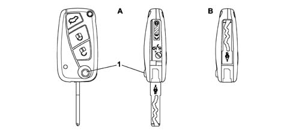
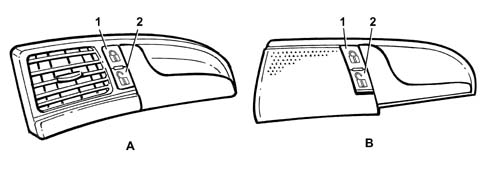
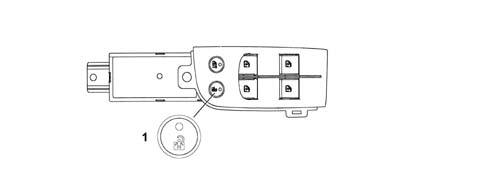
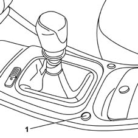
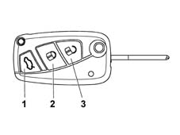
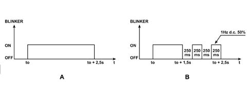
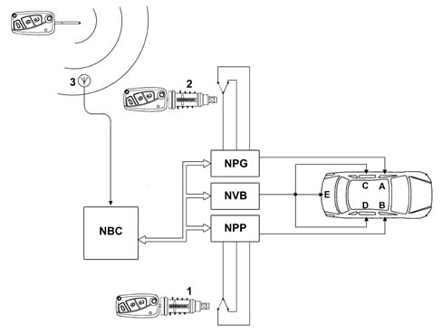
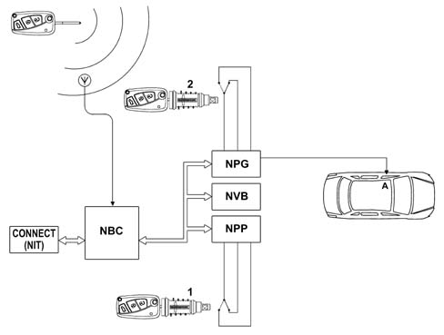
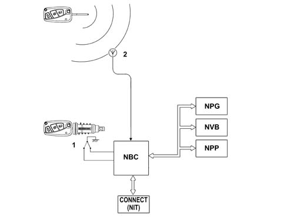
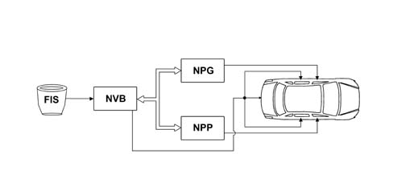

PASSENGER COMPARTMENT ACCESS
- Path
- Descriptions > 55 ELECTRICAL EQUIPMENT > 5505 INSTRUMENT/GAUGE ELECTRICAL CIRCUITS > 5505A multi-function components > PASSENGER COMPARTMENT ACCESS
- Kind
- system description
- Applies to
- all engines; all production periods
- Interactive page
- https://sloeber94.github.io/elrnDB-lThss/en/#/176655
Applies to: all engines; all production periods
SYSTEM COMPONENTS
Recognition/control components
Remote control key
The remote control key is a device that allows whoever is in possession of it to be identified by the vehicle either directly or remotely through the radiofrequency remote control function.
This identification takes place mechanically by means of the mechanical insert or electronically through a coded transponder housed inside (immobilizer function) or by means of secret crypto-rolling code transmitted via radiofrequency by the key to the vehicle (remote control function).
The mechanical key is a key with 3 remote control function buttons and integrates the rectractible insert for the steering unlocking and starting function.
Mechanical insert
The mechanical insert (emergency for key-less go systems) is used:
- for access to the vehicle through the driver's door and the front passenger door if the remote control or CID batteries are run down of if the vehicle battery is run down,
- for unlocking the boot.
- for deactivating the Air Bag (passenger and rear).
In the case of vehicles without keyless-go, it is used to release the steering and proceed with starting the vehicle.
It consists of a mechanical insert integrated in the remote control key or in the CID.
CID with remote control functions (OPT)
The CID (Customer Identification Device) is a device that allows whoever is in possession of it to be automatically identifed by the vehicle. For further details, see "Passive Entry Node".
Fixed outside handles with mechanical button for opening
The outside handles consist of:
- a fixed handle: this is the section that it grabbed by the customer and has a microswitch that is activated the moment the handle is grabbed.
- a mechanical button at the side (or behind for the rear handles) of the fixed handle which, when the lock is released, allows the opening of the door by pressing the actual button, used if the vehicle battery is run down
On both front handles, the button includes the pawl for the emergency mechanical insert which allows the lock to be released when the vehicle battery is run down.
Interior handles
The interior handles operate purely mechanically
Boot opening handle
There is an electric handle on the boot that allows the unlocking of the lock (with the keyless-go system) and the opening of the boot lid.
Power assisted locks
The vehicle is equipped with electric locks that move the mechanical parts during the door opening manoeuvre.
Key pawl in boot
There is a pawl in the boot that, using the mechanical key, allows the release of the boot to open it.
Key pawl in mechnical steering lock
The mechanical steering lock includes the pawl for inserting the mechanical key in order to release the steering and proceed with starting.
Ignition knob on electric steering lock (OPT)
The Passive Entry system replaces the pawl in the ignition lock barrel. For further details, see "Passive Entry Node".
Buttons for locking/unlocking locks from inside passenger compartment
There are two buttons on all the doors that allow the control of the central locking and unlocking of the locks from inside the passenger compartment.
Child lock button
There is a button on the driver's door that activates/deactivates the child locks (impossible to exit the rear doors by pulling the interior handle).
Buttons for excluding volumetric/tilt protection
There are two buttons in the courtesy light dedicated to excluding the volumetric protection of the passenger compartment and the tilt protection.
Info-telematic multifunction display
The display in the dashboard is used to personalize the options that can be set by the driver.
Signal components
LEDs in door panels
There is a two-tone (red/green) LED in all the vehicle door panels, that can be seen from the outside, which signals the result of the door locking/unlocking operations during access to the vehicle.
The front door LEDs are also used as deterrent LEDs for the alarm system.
Direction indicators blinker
The blinkers are used to signal the remote reception and implementation of several commands from the remote control as well as for signalling the switching on/off of the alarm system.
They also flash in the case of an alarm.
Alarm siren
The alarm siren acts as a signalling component by making beep noises. It also signals an alarm in the case of an intrusion/theft attempt.
Instrument panel display
The display in the instrument panel is used to signal irregular system states and possible failures to the user.
LOCK MANAGEMENT
The various nodes operate the following electric motors:
- fuel flap: NBC
- front door locking/unlocking motors: NPG, NPP
- rear door locking/unlocking motors: NVB
- boot lid motor: NVB
CENTRAL LOCKING SYSTEM
The central locking system manages the door and boot locks in order to protect the passenger compartment against entry by unauthorized persons.
The mechanical key is the type that can be extracted.

- A - Key closed
- B - Key extracted
- 1 - Key extraction button
Opening the door
The door can be opened from the outside by grabbing the handle: it can only be opened if the door is unlocked.
The door can be opened from the inside by pulling the interior handle:
Each door opens by pulling the interior handle even if the lock is locked. Pulling the interior handle on the driver's door simultaneously unlocks all the doors or the driver's door only depending on the "independent driver's door unlocking" setup function.
Pulling the interior handle on the passenger door simultaneously unlocks all the doors.
Pulling the interior handle on one of the rear doors only unlocks the door concerned.
Lock status display
For each change of status for the motor bars (and consequently each change of status for the locks) the appropriate red coloured LED is operated if the lock is locked and the green coloured one is operated if the lock is unlocked: the LED remains on for 3 seconds after each change of status.
If the state of the lock has already been requested when the button is pressed, the signalling is the same: therefore if the unlocking button is pressed with the locks unlocked or the locking button is pressed with the locks locked, the LED lights up green or red, respectively, for 3 seconds.
Locking locks from the outside (using key/mechanical insert)
The door locks can be centrally locked by inserting the mechanical key in one of the pawls (driver's door or passenger door) and turning it in an anti-clockwise direction. The pawl in the boot does not allow locking actions.
The locking of the doors through the driver's door pawl can, depending on the Connect setting, produce the locking of all the doors or the driver's door only. The request to lock the doors made through the pawl in the passenger door involves locking all the doors.
The dead-lock function cannot be engaged using the key with the insert.
Once any door locking command has been received (incuding turning the key), the NBC checks the door open/closed status and if one of the doors is found to be open, no implementation command is sent to the door/boot nodes (all the doors remain unlocked).
Locking locks from the inside
The electronic safety knob replaces the mechanical knob located on each door panel controlling the locking/unlocking of the door. The knob consists of:
- a locking switch + an unlocking switch: controlling the change in state of the lock
- a two-tone LED (green/red): displaying the status of the lock.
The operation of the various buttons is centralized and has an overall function for the locks for the entire vehicle.
If, the moment the locking button is pressed, one or more of the doors are open (or not properly shut), the locking command is not carried out.
The locking of the doors from the inside of the vehicle does not produce outside signals (blinker).

- A - Front door handl
- B - Rear door handle
- 1 - Door locking button
- 2 - Door unlocking button
Inhibition of door switches
If the electric child safety lock and/or the dead-lock are switched on, the rear door locking/unlocking buttons are inhibited and do not carry out the commands or display them.
If the dead-lock is on, the driver's and passenger door buttons are inhibited and do not carry out either command or display actions.
Electric child locks
There is an unstable button on the driver's door trim that has the function of switching this function on and off if pressed for more than 1 second on key-on conditions.
The child safety lock status is signalled by:
- an indication in the instrument panel with the safety lock switched off
- an LED, near the button, which is on with the child safety lock on.
The status of the child safety lock (on/off) is memorized in the NBC EEPROM each time there is a change and is maintained in the memory even if the vehicle battery is disconnected.
The child safety lock allows the rear interior handle to be in a neutral position irrespective of the locked/unlocked status of the actual doors. This is physically achieved by means of the linkage used for the dead-lock function.
Switching on child locks
The child safety locks for the rear door locks are switched on in the DEAD-LOCK position, guaranteeing the disconnection of the interior handle.
In any case, opening from the outside is permitted (only if the door is "logically" unlocked).
Switching off the child safety locks
When the child safety locks are switched off, the lock is placed in a position where the interior door handle is reconnected.
Following this manoeuvre the lock returns to the locked position if the door was "logically" locked.
Electric door opening
If the door is opened from the outside with the child safety lock on, when it is later closed it returns to the lock+dead-lock status (child safety lock switched on).
When the door is closed again, the child safety lock does not hve to be switched on again.

- 1 - Rear doors locking button
Unlocking doors/boot using key/mechanical insert
The vehicle is fitted with a pawl in both front doors that allows the unlocking of all the doors using the mechanical key in accordance with the vehicle setup (centralized or driver's door only).
The boot has a pawl in the no. plate holder which allows the release of the boot using the mechanical key.
In addition to unlocking the doors, opening using the mechanical key also deactivates the dead-lock function.
Unlocking the driver's door independently
Using the CONNECT it is possible to set the behavious of the central locking system when acting on the driver's door in the following modes:
- central unlocking (default setting): by turning the key (or pulling the interior handle if the dead-lock function is not activated) all the doors (including the boot) are unlocked at the same time allowing access to the vehicle through any door.
- driver's door unlocking: by turning the key (or pulling the interior handle if the dead-lock function is not activated), the driver's door only is unlocked whilst the other doors and the boot remain locked, preventing access by non authorized persons. In this case the green LED in the driver's door panel comes on whilst the ones in the other doors remain off.
However, even if the "driver's door unlocking" function is set, it is possible to unlock the other doors by pressing the central unlocking button on the driver's door trim.
On the other hand, acting on the passenger door, using either the mechanical key or the interior handle, unlocks all the doors centrally.
The implementation of the driver's door unlocking implies exit from the dead-lock function for all the doors.
In the case of problems with the electrical supply to the lock and to the (front) door handle, the front doors can be unlocked and opened mechanically using the mechanical key.
Unlocking the locks from the inside
Acting from the inside on the handle of any of the doors, unlocks and, at the same time, opens the door in question; if the handle on one of the front doors is pulled, the unlocking of the doors is centralized; if, on the other hand, the unlocking of the driver's door is set, acting on the latter only unlocks the driver's door and other doors remain locked.
To activate the central unlocking of the doors, act on the unlocking button located in the driver's door trim.
With the child safety lock on, the rear doors cannot be unlocked either using the interior handles or using the lock unlocking interior buttons.
With the dead-lock function activated the doors cannot be opened using the interior handles.
The unlocking of the doors from the inside of the vehicle does not produce outside signals (blinker).
Unlocking and opening the boot
The boot, equipped with an electric lock and an electric handle, works like a 5th door; it is automatically unlocked centrally when the doors are unlocked, in this way the electric handle is enabled and opens the boot when it is used: therefore the lock releases the boot and allows it to be lifted.
If the "driver's door unlocking" function has been set, the boot is not unlocked.
There is also a button in the passenger compartment for unlocking the boot lock: this function is only activated with the vehicle stationary and the doors unlocked.
Pressing the button once unlocks the lock and allows the boot to be opened manually from the outside. Keeping the button pressed for more than 1 second unlocks and releases the boot: the boot open status is signalled by the Connect through the door/boot check function (there is not, however, a boot unlocked status signal).
Button commands are not accepted in any case if the speed of the vehicle exceeds 30 km/h.

- 1 - Boot unlocking button
The rotation of the boot pawl allows it to be opened, electrical implementations do not correspond to this action; the pawl produces purely mechanical movements.
Unlocking the boot independently
Using the CONNECT it is possible to set the boot behaviour in 2 modes:
- Boot controlled by door lock (default setting): boot status reflects door status. When the car is locked, the boot is locked. When the car is unlocked, the boot is unlocked.
- Boot independent: the boot is always locked and can only be opened using the special control (mechanical key using the boot pawl, remote control button or dashboard button).
In the case of problems with the electrical supply to the lock and to the boot handle, the latter can be unlocked and opened mechanically using the mechanical key.
Automatic relocking of boot
If 30 seconds after the boot unlocking command (via the button on the tunnel or the remote control), the boot is not opened, the boot is automatically re-locked: this operation is only carried out if the doors are locked (therefore if the vehicle is locked and the boot opening has been controlled without gaining access).
Unlocking and opeing fuel flap
The fuel flap is connected to the locked/unlocked status of the driver's door:
- flap locked with driver's door locked
- flap unlocked with driver's door unlocked
The fuel flap is unlocked:
- by a locking/unlocking command from the interior button
- by a locking/unlocking command from the pawl,
- by a locking/unlocking command from the remote control,
- by a locking/unlocking command from the passive-entry.
- when the driver's door is opended by a locking command if the door was "locked".
Locking by "outside" events (FIS)
In the case of an impact the locks are automatically unlocked by information from the inertia switch (FIS).
The signal from the FIS sensor causes the unlocking of the boot irrespective of the selections made by the NIT.
Central locking system auxiliary functions
Using the Conect it is possible to activate the function which automatically locks the doors and the boot when the speed of the vehicle exceeds 20 km/h. The doors and the boot remain locked when the speed goes below 20 km/h, preventing access to the vehicle by unauthorized persons. The function is not activated in default.
The automatic locking control does not produce signals (blinker/LED).
CENTRAL LOCKING SYSTEM WITH RADIOFREQUENCY REMOTE CONTROL
The remote control key has 3 buttons which allow the operation of the central locking system: one button for unlocking the doors, one for locking the vehicle and one for releasing the boot. The key contains a secret code that identifies it and allows recognition.
The transmission of a command is carried out by pressing one of the transmitter buttons. Whilst pressing the button, the LED in the transmitter flashes at a frequency of 3 Hz.
The transmitter signals that the batteries are run down by giving a single flash lasting 200 ms when the button is pressed.

- 1 - Boot opening button
- 2 - Door closing button
- 3 - Door opening button
The direction indicators and the LEDs in the door panel are used to signal that the command has been received and/or to signal that a manoeuvre has not been carried out by the system (the signals are activated according to the market).
Each time it is operated, the remote control sends the Body Computer information on the state of charge of its internal battery, if the remote control battery is run down, the appropriate message will be shown on the instrument panel display at the next key on.
Locking the doors
Pressing the lock locking button centrally locks them and the alarm system is switched on.
In addition to the LED at the side of the door safety knob coming on (see Central locking "LOCK STATUS DISPLAY"), the manoeuvre is signalled by the flashing of the direction indicators for 2.5 seconds and a beep.
If the button is pressed with the vehicle already locked, the manoeuvre and the signalling are still carried out.
When the "locking" command is received from the remote control, the direction indicators come on. After 1.5 s the NBC checks the status of the door and if the operation has been successful the signalling ends 2.5 s ± 10 % after coming on.
If the locking manoeuvre has not been successful, the signalling is interrupted and is followed by two flashes lasting 250 ms.

- A - Locking command correctly carried out
- B - Locking command unsuccessful
Unlocking the doors
When the unlocking button is pressed, all the doors are unlocked and the alarm system switched off.
In addition to the LED at the side of the door safety knob coming on (see Central locking "LOCK STATUS DISPLAY") there are two flashes, lasting 0.5 seconds, of the direction indictors and two beeps signalling that the command has been correctly received.
If the button is pressed with the vehicle already unlocked, the manoeuvre and the signalling are still carried out.
If the "independent driver's door unlocking" function is activated, when the unlocking button is pressed, only the driver's door is unlocked, whilst the other doors remain locked.
It is therefore possible to unlock the other doors as well by pressing the unlocking button a second time within 1 second of pressing it the first time.
Dead lock function
The dead-lock function makes it possible to mechanically disconnect the interior door opening handles, so that it is not possible to open the door from the inside using the handle after having broken the glass (greater protection against theft).
The dead-lock function is engaged using the remote control the moment the doors are locked by pressing the button a second time within 1 second of pressing it the first time.
When the dead-lock is on, the normal signalling of the door closure is integrated by 2 flashes lasting 0.5 seconds of the direction indicators and 2 further flashes of the red LEDs in the door panels.
The dead-lock is only switched on if the doors and the boot are properly shut.
With the dead-lock switched on, the vehicle locking/unlocking buttons (in the door panels) are inhibited as well as the button for unlocking the boot from inside the vehicle.
Following a request to unlock the doors from the remote control, key pawl or passive entry, the dead-lock is removed from all the doors, irrespective of the configuration selected by the Connect.
If there is a request to unlock the driver's door in "independent driver's door unlocking" mode, with the dead-lock on, the dead-lock function is removed from all the locks which do, however, remain locked (except, obviously the driver's door).
Opening/closing the boot
A dedicated boot button on the remote control (3rd button) can be used for the following manoeuvres:
- unlocking the boot lock for manual opening, by pressing the boot button, the lock is unlocked and the boot can be opened acting on the boot handle; the doors remain locked. The unlocking of the boot is signalled by the direction indicators flashing twice.
- unlocking lock and automatic boot release: by pressing the boot button for more than 2 seconds, the lock is unlocked and the boot released; the doors remain locked.
If within 30 seconds of an unlocking command, the boot is not opened, the lock is locked once again.
Opening boot with vehicle locked
If the alarm system is on (vehicle ocked), the moment the boot is opened the perimeter protection of the boot, the volumetric protection and the tilt proection are temporarily excluded.
Locking the boot
When the boot is closed again, it remains unlocked and therefore has to be re-locked by pressing the remote control door locking button which reactivates the alarm protection functions.
The locking of the boot using the door locking button produces the same signals as for locking the doors.
Boot assistance during central locking
It is possible to set 2 boot locking/unlocking modes using the info-telematic display:
- controlled by door lock (default setting): the locking/unlocking actions for the doors are also carried out by the boot. Therefore with the vehicle unlocked the boot is unlocked, whilst with the vehicle locked, the boot is locked.
- autonomous, always locked: the boot is always locked and should be unlocked (via the internal button, remote control, mechanical insert) the moment access to the boot is desired.
Auxiliary functions
It is possible to control the opening and closing of the windows and the opening and closing of the sun roof by keeping the R.F. remote control locking and unlocking button pressed depending on whether you want to close or open the windows and the sun roof.
The closing/opening of the windows and the sun roof takes place when the remote control button is pressed (for a long time) until the end of the movement. If the button is released during the movement, it is halted.
The function is only available at the key off or with the key in the PARK position. In the case of a transition from key off or PARK to key on, the movement is stopped.
FUNCTIONAL CENTRAL LOCKING SYSTEM
Locking
The operation of locking the locks takes place using an R.F. remote control or directly using the mechanical key in the door pawl.
If it takes place using the R.F. remote control, the aerial transmits the command directly to the NBC.
If, on the other hand, it takes place using the mechanical key in the front door pawl, the switches advise the respective door nodes (NPG for the left door and NPP for the right door) and they transmit the information via the B-CAN to the NBC.
At this point the NBC manages the locking of the doors, which is always implemented for all the doors, sending the signal via the B-CAN to the NPG, NPP and NVB nodes.

- A- Left front door lock
- B- Right front door lock
- C- Left rear door lock
- D - Right rear door lock
- E - Boot lock
- 1 - Right front door pawl
- 2 - Left front door pawl
- 3 - Aerial
On the basis of the locking command transmitted, the NBC updates the individual door locked/unlocked status and then transmits this via the B-CAN.
Unlocking
It is possible to set the unlocking of the locks using the CONNECT setup menu as follows:
- centralized for all the locks
- driver's door only
The unlocking action can also, in this case, take place using the R.F. remote control or using the mechanical key in the door pawl using the unlocking switch transmitted to the NPG for the left pawl and the NPP for the right one which then make the information avialable to the NBC via the B-CAN.
At this point the NBC transmits the unlocking command to the following nodes via the B-CAN:
- NPG if the "driver's door only" option is set
- NPG, NPP and NVB if central unlocking is set (default setting)
In the first case only the NPG will command the driver's door lock unlocking motor, whilst the other locks will remain locked.

- A- Left front door lock
- 1 - Right front door pawl
- 2 - Left front door pawl
It should be remembered that if a second unlocking action is carried out within 1 second of the first unlocking action, the NBC will command the NPP and the NVB (via the B-CAN) to unlock the other locks.
In the second case the NPG will unlock the driver's doo lock, the NPP will unlock the passenger door lock and the NVB will unlock the rear door and tailgate locks if the central locking boot control release is set after having received the command from the NBC via the B-CAN.
Central locking/unlocking switches on driver's door
When the locking and unlocking buttons on the driver's door are pressed, the NPG will transmit the information via the B-CAN and request the NBC to centrally lock or unlock the doors.
The NBC will then order the NPG, NPP and NVB nodes, via the B-CAN, to lock or unlock the locks.
Each time it is pressed the NPG will always produce a command, irrespective of the locked or unlocked status of the door.
It should be remembered that if the doors have been locked from the outside (remote control, pawl, Passive Entry, automatic re-locking) and/or the dead-lock is on, the buttons will be DISABLED.
They will be re-enabled following an unlocking command from the remote control, pawl, Passive Entry and FIS.
Dead-lock
The NBC acquires the request to switch the dead-lock on or off (pressing the remote control door locking button twice) and the doors open switch status (the doors should be closed) and transmits the commands to switch the dead-lock on or off, via the B-CAN, with these commands implemented by the nodes which operate the dead-lock motors.
Following an unlocking request, the NBC orders the NPG, NPP and NVB nodes to remove the dead-lock from all the doors, irrespective of the CONNECT setting.
With the dead-lock on, the central locking/unlocking buttons on the driver's door trim are disabled.
Locking/unlocking the boot
The boot is considered as a door to all intents and purposes and its management is entrusted to the NBC which changes the logic status according to the locking or unlocking commands; the function is the "logic" type because there are no locking/unlocking implementation motors on the boot lid.
In other words, after an unlocking command, the logic status of the boot lock is in the "unlocked" state and, therefore, the boot can be opened using the electric handle.
Conversely, after a locking command, the logic status of the boot lock is in the "locked" state and therefore does not allow the opening of the boot using the electric handle, it can only be opened using the R.F. remote control or the key pawl.
The boot follows the central operation of the doors when locking.
The unlocking, on the other hand, can be carried out in the following 2 ways:
- controlled by the central locking: in this case the state of the boot follows that of the door locks. In addition, the logic also depends on whether the unlocking of all the doors or just the front driver's door is enabled, as described below: Driver's door unlocking only activated (the boot does not unlock), Central unlocking activated (the boot does unlock).
- independently: the boot is normally locked when the doors are locked, therefore it can be unlocked independently of unlocking the doors; in other words, when the doors are unlocked, the boot remains locked.
The boot can be unlocked using the remote control or opened using the mechanical key in the pawl.
These two settings can be made by the user through the CONNECT.

- 1 - Boot pawl
- 2 - Aerial
Fuel flap
The fuel flap is managed directly by the NPG and is therefore connected to the locked/unlocked status of the driver's door.
The fuel flap is unlocked by:
- central locking/unlocking command at the driver's door, from the pawl, the R.F. remote control, the Passive Entry; it is therefore connected to the driver's door (at an H.W. level to the NPG)
- opening the driver's door if this door was "locked". Therefore when opening the driver's door, the relevant door open switch signals the opening to the NBC which transmits this information via the B-CAN; the NPG reads the transition of the door status from closed to open and energizes the central locking motor, also unlocking the fuel flap.
Unlocking the doors through the F.I.S. signal
The NVB acquires the FIS signal and, if the inertia switch has been operated, directly unlocks the rear doors and sends the command to unlock the front doors via the B-CAN.

The FIS unlocks the boot, irrespective of the setting on the Connect.
Inhibition by high number of manoeuvres
If 10 locking/unlocking manoeuvres are carried out in 25 seconds, the NBC inhibits the locking/unlocking commands and signals for 30 seconds.
Inhibition by simultaneous commands
When a command is received at the B-CAN, the NBC carries out the command requested and inhibits any other commands arriving from the functions and signals for 0.5 secs in order not to activate conflicting actions with the exception of the dual action (engaging the dead-lock after a locking action).
The moment the +30 supply is connected, the NBC inhibits the implementation of any other command for 2 seconds.
Doors/boot/bonnet open buzzer
The NQS acquires the door, boot, bonnet (only if the alarm is fitted) status and vehicle speed signals from the B-CAN.
If one of the doors or the boot or the bonnet is open and the speed exceeds 4 km/h, an acoustic signal is produced.